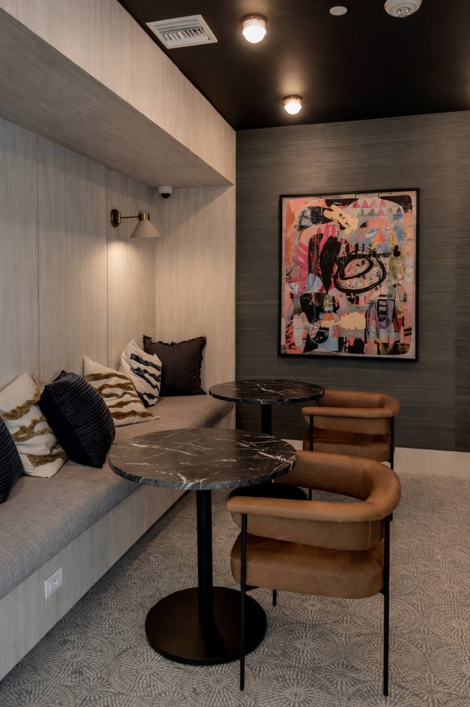
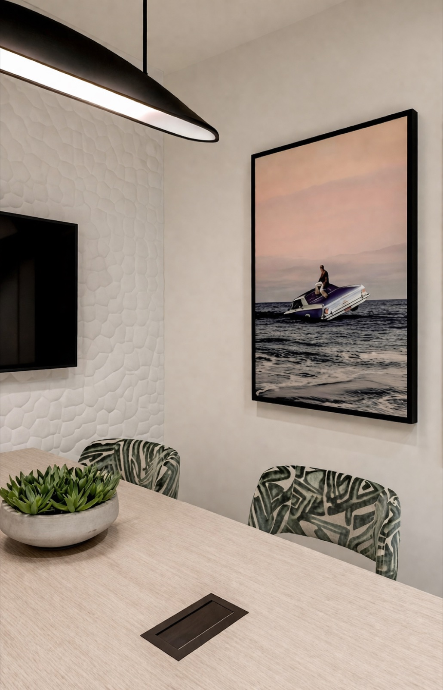
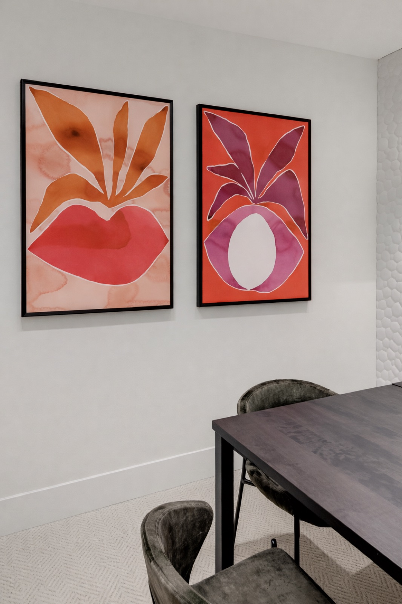
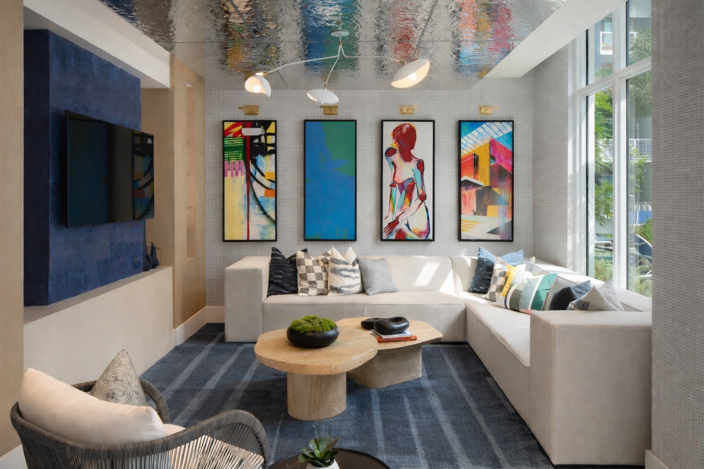
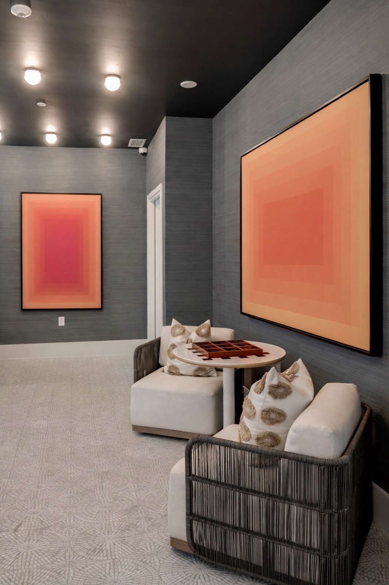

Tortoise One is the most art-forward of Rachel's commercial spaces. It is a project in which the curation program came first and the interior design followed, building itself around six carefully chosen works that define every spatial and material decision.
THE BRIEF
The client's vision was bold: lead with art. Not as decoration applied after the fact, but as the true origin point of the design. Tortoise One was an opportunity to demonstrate what happens when a space is genuinely built around its collection, where the art isn't chosen to match the sofa, but the sofa is chosen to honour the art.


CURATION APPROACH
Six works were selected across medium, scale, and register, from large abstract canvases that command entire walls to intimate works that reward close attention. Together they form a coherent program: emotionally complex, visually arresting, and deeply personal in the way only a considered collection can be.
Each piece was placed in dialogue with its neighbours and its architecture. Sight lines were drawn between works across rooms, so the collection reads as a whole even when experienced in fragments.



THE PHILOSOPHY IN PRACTICE
Tortoise One is the clearest expression of Rachel's core design conviction: that art is not an accessory to a space, but its soul. The six works here don't inhabit the interior. They generate it. Strip them away and the rooms would lose not just decoration but meaning.